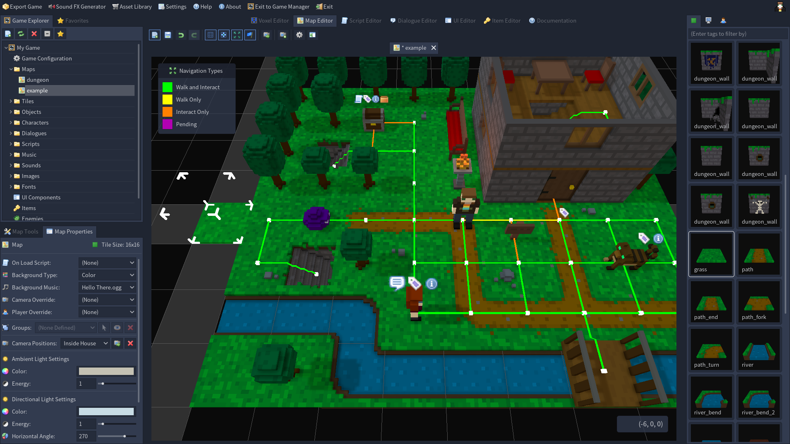

Игровой движок — это сложный инструмент, который трудно представить в нескольких словах. Вот краткий обзор, который вы можете использовать, чтобы быстро описать Godot Engine:
Godot Engine — это многофункциональный кроссплатформенный игровой движок для создания 2D- и 3D-игр через единый интерфейс. Он предоставляет полный набор универсальных инструментов, поэтому пользователи могут сосредоточиться на создании игр без необходимости изобретать велосипед. Игры можно экспортировать одним кликом на разные платформы, включая основные настольные (Linux, macOS, Windows), мобильные (Android, iOS), а также веб-платформы и консоли.
Godot полностью бесплатен и распространяется на условиях пермиссивной лицензии MIT с открытым исходным кодом. Никаких скрытых условий, роялти, ничего подобного. Игры пользователей принадлежат им полностью, вплоть до последней строки кода движка. Развитие Godot полностью независимо и делается руками сообщества, давая пользователям возможность влиять на развитие движка согласно своим ожиданиям. Оно поддерживается Фондом Godot, который является некоммерческой организацией.


Godot Engine – очень компактный (~74MB), быстрый и оптимизированный движок, позволяющий создавать с нуля любую игру любого жанра. Он кроссплатформенный, мультифункциональный, бесплатный, опенсорсный.
Кстати «с нуля» здесь ключевое. В базовой сборке Godot не имеет шаблонов для игровых процессов, однако есть огромное количество плагинов, аддонов и внешних библиотек, которые могут помочь со стартом. Доступ к репозиторию осуществляется прямо из окна запуска движка. Просто переходим на нужную вкладку и листаем
Он достаточно дружелюбен к новичкам. Элементы документации продублированы в трёх местах, что обеспечивает быстрый доступ к справке «без отрыва от производства». Так же в движок зашиты ссылки на он-лайн ресурсы, которые помогут вам в решении большинства проблем.
Несмотря на свою легковесность, Godot обладает необходимым и достаточным функционалом разработки (об этом ниже), а так же берёт на себя базовые оптимизационные задачи, такие как: управление памятью и ресурсами компьютера, интеграция устройств ввода, сборка и оптимизация продукта под различные платформы – от мобильных, до консолей.
При этом базовая сборка не тащит за собой «ваще все библиотеки, которые только есть в природе» – вплоть до того, что в ней отсутствуют инструменты для билда. Godot – это конструктор. Он не знает, чем вы будете заниматься, поэтому предоставляет функционал разработки… и… всё! Остальное вы докачиваете сами по мере необходимости.
Периодически в этих ваших интернетах на форумах и у обзорщиков проскальзывает снисходительная ремарка «Godot – движок для первой игры, и всё». Это не так. Godot – высокоуровненвый профессиональный инструмент, достаточно дружелюбный, но своеборазный и сложный в освоении, если вы хотите нарисовать что-то сложнее пиу-пиу платформера.
В итоге имеем отличный игровой движок, который отличается своей простотой, однако сохранаяющий в себе эффективность и рабостосопность других представителей игровых движков!
Кстати «с нуля» здесь ключевое. В базовой сборке Godot не имеет шаблонов для игровых процессов, однако есть огромное количество плагинов, аддонов и внешних библиотек, которые могут помочь со стартом. Доступ к репозиторию осуществляется прямо из окна запуска движка. Просто переходим на нужную вкладку и листаем
Он достаточно дружелюбен к новичкам. Элементы документации продублированы в трёх местах, что обеспечивает быстрый доступ к справке «без отрыва от производства». Так же в движок зашиты ссылки на он-лайн ресурсы, которые помогут вам в решении большинства проблем.
Несмотря на свою легковесность, Godot обладает необходимым и достаточным функционалом разработки (об этом ниже), а так же берёт на себя базовые оптимизационные задачи, такие как: управление памятью и ресурсами компьютера, интеграция устройств ввода, сборка и оптимизация продукта под различные платформы – от мобильных, до консолей.
При этом базовая сборка не тащит за собой «ваще все библиотеки, которые только есть в природе» – вплоть до того, что в ней отсутствуют инструменты для билда. Godot – это конструктор. Он не знает, чем вы будете заниматься, поэтому предоставляет функционал разработки… и… всё! Остальное вы докачиваете сами по мере необходимости.
Периодически в этих ваших интернетах на форумах и у обзорщиков проскальзывает снисходительная ремарка «Godot – движок для первой игры, и всё». Это не так. Godot – высокоуровненвый профессиональный инструмент, достаточно дружелюбный, но своеборазный и сложный в освоении, если вы хотите нарисовать что-то сложнее пиу-пиу платформера.
В итоге имеем отличный игровой движок, который отличается своей простотой, однако сохранаяющий в себе эффективность и рабостосопность других представителей игровых движков!